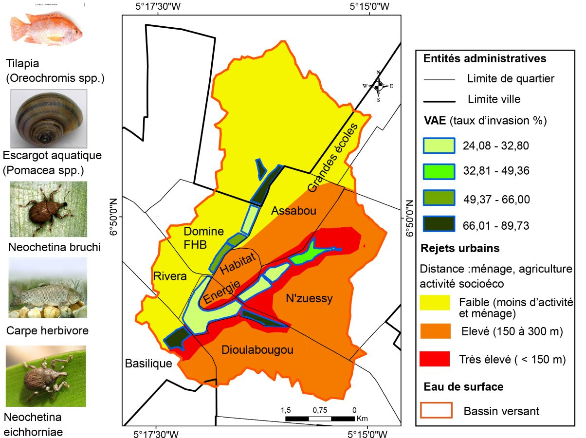

Cartographie
Stratégie de gestion des VAE sur les lacs artificiels
Yamoussoukro
Conception d'une carte stratégique pour la gestion des végétaux aquatiques envahissants (VAE) sur les lacs artificiels de Yamoussoukro. Identification des zones d'intervention prioritaires et support d'aide à la décision pour les autorités locales.
QGIS
Cartographie
Analyse spatiale